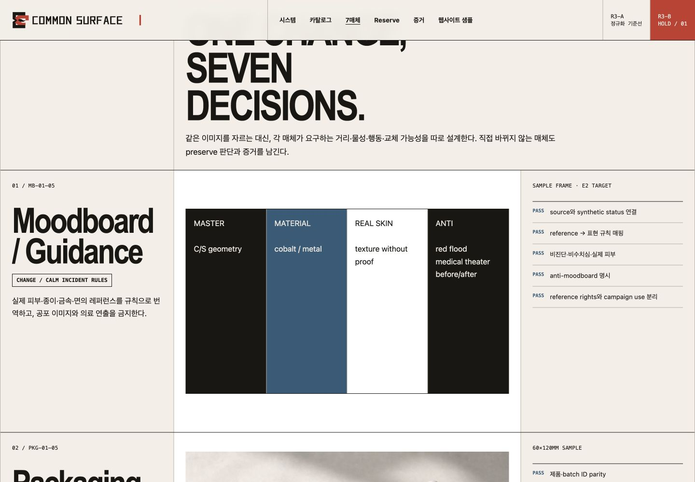

08.04 — 08.10
THE PLAN
앱이 아니라
시스템을 목표로 삼다.
최소 온보딩, 직관적인 UI, 확장된 AI 디자인 시스템을 하나의 범용 구조로 만들고, 앱·웹·책에 적용해 실효성을 평가한다는 계획을 세웠다.


AI가 디자인 시스템을 이해하고, 조합하고, 실제 경험으로 옮길 수 있는가를 확인하기 위해 시작한 15일의 실험. 랜덤 비트메이커는 목적지라기보다 시스템을 시험하는 계기였다.
질문은 처음부터 하나였다.
“범용 시스템은 어디까지 작동하는가?”
최소 온보딩, 직관적인 UI, 확장된 AI 디자인 시스템을 하나의 범용 구조로 만들고, 앱·웹·책에 적용해 실효성을 평가한다는 계획을 세웠다.
단일 시스템으로 모든 것을 해결하려던 가정은 흔들렸다. 작업은 문서 읽기, HIG·UX 리서치, HTML을 Figma로 옮길 수 있는지 조사하는 쪽으로 이동했다. 시스템 설계는 머리가 아프지만 필연적이었다.


Overview, Experience Composer, Adapter Reference, Commercial Design System을 연결해 A/B 질문을 좁혔다. “만들 수 있는가?”는 “UX 시스템으로 실제 작동하는가?”로 바뀌었다.


Product Binding이 무엇을 결정하고, UX Preset이 어떻게 진행하며, Design Pack이 어떻게 보이게 할지를 분리하자 시스템의 역할이 선명해졌다.
랜덤 음악 앱과 병렬로 가상 브랜드에 Design Pack과 UX Preset을 적용했다. 질문은 화면이 많이 만들어지는가가 아니라, 변경·확장·검증을 감당할 수 있는가였다.
제품·매장·캠페인·머천다이즈까지 확장. 재사용성은 보였지만 고객 맥락은 얕았다.

로고·제품·인물·응용 매체는 풍부해졌지만 제품 정보의 빈칸은 남았다.

7개 매체 변경 전파에서 Binding·권한·rollback·증거 관리의 결함을 확인했다. 종합 판정은 REVISE였다.

디자인팩·로고·제품·토큰을 고정하고 고객 상황 하나만 바꿨다. 연결성은 6.2에서 8.1로 올랐다.

Markdown은 Product Binding → UX Preset → Design Pack의 소유권과 경계를 고정하는 가장 재현 가능한 매체였다.
좋은 화면 하나는 일관성·변경 전파·rollback·실제 사용성을 보장하지 않는다.
COMMON SURFACE를 고정하고 Pack만 바꾸는 Fair Round Lock으로, 한 변수와 실제 사용자 결과를 분리해 검증한다.